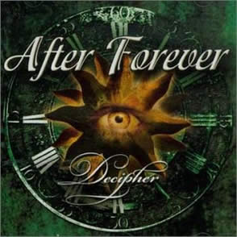
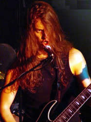

Entrevista
de Mark Jansen à Júlio C. Mosca - Rock Connection - 2002
Como está
a repercussão do novo álbum Decipher
?
Ele está surpreendendo! O álbum
foi lançado em outubro na maior parte da Europa e mais
tarde em alguns outros lugares. Especialmente na Holanda, Bélgica,
Espanha, Itália e França, tivemos comentários
muito bons. No momento estamos fazendo uma turnê pela
Holanda e Bélgica. Nós estamos tocando apenas
nos finais de semana, porque ainda estamos estudando nos demais
dias. As reações têm sido grandes, e a maioria
dos shows está lotado. Recentemente, fomos convidados
para tocar em um programa da TV alemã e para alguns festivais
europeus. Então, as coisas estão indo bem por
aqui, espero que aí no Brasil as pessoas tenham gostado
de Decipher. Para nós é um sonho poder tocar no
Brasil e na Argentina, existiram alguns rumores sobre uma possível
turnê pela Argentina, mas eu não sei o que aconteceu.
Como
andam os shows de divulgação?
Bem, como eu disse, nós estamos
em turnê pela Holanda e Bélgica atualmente, e temos
tocado todo o final de semana.
O que inspirou
vocês a escreverem o álbum Decipher?
Primeiro de tudo a inspiração
veio do álbum anterior Prision Of Desire, isso
porque nós iniciamos as composições logo
após o término de Prision Of Desire. Nós
nos sentimos livres para escrever coisas novas, após
um período de 5 anos trabalhando em Prision Of Desire.
Boa parte da inspiração musical veio de música
clássica, como por exemplo Rachmaninov e Chopin, este
último influencia diretamente nosso novo tecladista.
Para as letras utilizamos as notícias que acontecem no
dia a dia, como os conflitos entre israelenses e palestinos,
mas escrevemos todas antes de 11 de setembro.
Qual sua música
favorita em Decipher e por que?
Forlorn Hope pois ela traz todos
os elementos do After Forever, e a declamação
do Rabino dá um ar real a ela. É uma música
perfeita para tocar em shows.
Algumas vezes
Dechiper parece mais melódico do que os álbuns
anteriores. Como você o definiria?
Sim, eu penso que isto é verdade.
Nós procuramos fazer uma boa mistura entre o melódico
e a parte rítmica, e penso que conseguimos.
Fale-nos a
respeito da capa de Decipher?
Carsten Drecher foi o responsável
pela capa e encarte. Nós demos a ele algumas idéias
e letras, e ele trabalhou em cima disso. Quando ele terminou,
mandou para nós, e nós dissemos do que havíamos
gostado e o que queríamos que mudasse. Foi muito bom
trabalhar com ele, um cara muito profissional.
O que você
pensa sobre o futuro dos estilos metálicos. E você
considera o Metal ultrapassado, como muitos insistem em afirmar?
O Metal nunca morrerá, alguns gêneros
deixam de ser tão populares, mas logo voltam reformulados
e com outras direções. A boa música sempre
sobreviverá.
Agora irei
nomear algumas bandas e você me fala o que acha delas.
Antes tenho que te dizer que eu não
ouço muito outras bandas, então algumas eu não
conheço bem.
Paradise Lost?
Grande banda! Vi há uns oito anos
atrás no Dynamo. Grande atmosfera e grandes músicas.
Gosto muito de álbuns como Draconian Times e
Icon. Mas o som de atualmente não é meu
preferido.
Lacrimosa?
Eu sei que ela é formada por um
homem e uma mulher, mas não conheço o som.
Iron Maiden
Uma das minhas favoritas de todos os tempos.
Grande banda! 7th Son Of A 7th Son e Somewhere
In Time são os melhores álbuns em minha opinião.
Dreams of
Sanity
Infelizmente não conheço
a música deles.
Slayer
Algumas músicas de Season In
The Abyss são fabulosas! Grande banda ao vivo.
Tristania
Uma boa banda, mas não é
minha preferida. Gosto mais do Nightwish.
Quais
são seus planos futuros, pessoais e com a banda?
Nós sempre esperamos alcançar
muitas pessoas com nossa música, e estamos trabalhando
muito duro para isso. Queremos conhecer o mundo e tocar nossa
música. Já estamos escrevendo algum material para
o próximo álbum, mas penso que somente no ano
que vem entraremos em estúdio. Antes queremos tocar bastante.
Meus planos pessoais são fazer um projeto com minha namorada,
ela é vocalista. O projeto será uma mistura entre
musica clássica, trilha sonora e Metal. Bem diferente
do After Forever, mas tenha paciência.
Existe a possibilidade
de tocarem no Brasil?
Sim, acredito que seja possível,
apenas não sabemos quando. Eu freqüentemente falo
com fãs brasileiros pela Internet e alguns me cobram
isso.
Depois de
todos estes anos tocando Heavy Metal. Como você se sente?
É muito bom poder tocar Metal e
eu apenas quero poder continuar a tocá-lo!
Deixe uma
mensagem para seus fãs brasileiros?
Ok, eu quero agradecer vocês pela
atenção, opiniões e ajuda durante todo
este tempo. Espero poder continuar a contar com vocês.
Muito obrigado.
Extraída
de www.afterforever.com.br